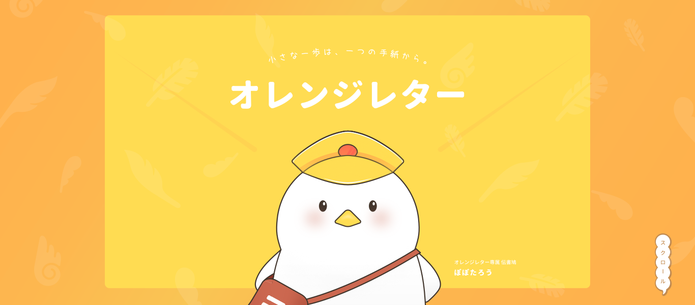
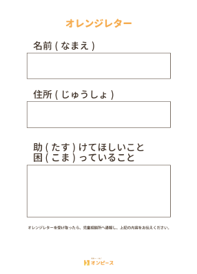
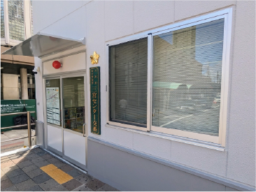

未来への手紙を通じて、虐待の影に光を。
児童虐待は深刻な社会課題ですが、わたしたちは一つの手紙から始め、
明るい未来への一歩を踏み出します。
オレンジレターは、すべての子どもたちの声を届ける、
心温まるつながりの場です。
共に知り、共に行動し、子どもたちの安全と幸福のために声を上げませんか？
-

オレンジレターは、子どもたちが安心して相談できる仕組みです。
虐待を受けている子どもたちは、オレンジレターとよばれる手紙に名前や住所、困っていることを書き込み、それを学校や病院、交番に設置された専用ポストに投函します。その手紙を受け取った教職員や警察官は、児童相談所に通報し、子どもたちをサポートします。
オレンジレターはインターネットを使用せず、アナログな手紙のやりとりを
通じて、子どもたちが安全に声を上げる仕組みです。
オレンジレター、専用ポストはすべての子どもが利用できるよう、
町中のあらゆるところに設置されているよ！
設置場所
-
小中学校・幼稚園
-

警察署・交番
-
病院